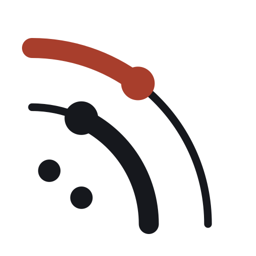
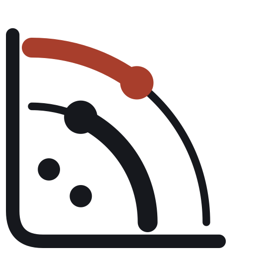

v1b-track


16 px

v1c-frame


Corner controls: original, track refinement and screen-corner refinement.


16 px


Hand-drawn reference silhouette: origin dot and two uniform arcs.
Coral #ff8c78 on graphite #16181d. Deep #a83e2c on paper #f4f3f0. Independent project, not affiliated with or endorsed by Omarchy.